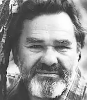
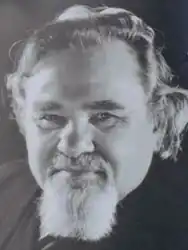
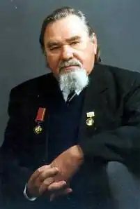
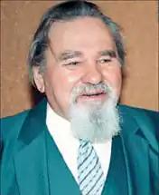

РУДЕНКО МИКОЛА ДАНИЛОВИЧ
1920 (19.12)
Микола Данилович Руденко народився в селі Юр'ївка Олександрівського р-ну Луганської області в сім'ї шахтаря. Навчання на філологічному факультеті Київського університету було перерване війною, з якої повернувся тяжко пораненим. Протягом року лікувався у госпіталі. У 1947 році видає першу книжку віршів "З походу". Бібліографічні довідники засвідчують рясний поетичний ужинок поета і прозаїка в 50—70-і роки; тільки протягом п'ятдесятих вийшло у світ сім збірок його поезій і романи "Вітер в обличчя" та "Остання шабля". Непересічний талант і абсолютна бездоганність біографії (вихідець із пролетарської родини, фронтовик) забезпечували йому роль партійного керівника літераторів. Успіх на поетичній ниві та помітне місце на ієрархічній письменницькій драбині (був певний час секретарем письменницької партійної організації) і забезпечений матеріальний стан все ж не зробили його на все життя доконаним сервілістом (угодником) влади. З гіркотою та іронією згадував поет вже у 80-і роки про той час: З'явилось черевце укупі з кабінетом, Ще й дача над Дніпром, як визнання заслуг. Та під кінець 60-х доля письменника різко змінюється. Настає прозріння. З кола шанованих владою поетів він раптом переходить до дисидентів, стає критиком епохи "розвинутого соціалізму". М. Руденко пише до керівних партійних органів листи, в яких критикує позірні досягнення як економіки, так і політики комуністичної держави. Невдовзі вступає до Міжнародної Амністії й утворює Українську Групу Сприяння Виконанню Хельсінських Угод*. Різко міняється характер та ідейна спрямованість творчості М. Руденка. З-під його пера виходять дослідження "Економічні монологи" і "Слідами космічних катастроф", в яких він переглядає і заперечує догми Марксової політекономії, передбачливо віщує економічні катаклізмі! в СРСР. Економіко-світоглядні погляди М. Руденка будуються на запереченні висновків К.Маркса про важелі розвитку капіталістичного суспільства: Марксова модель капіталу не має узгодження із законом збереження й перетворення енергії. Головний важіль економічного розвитку суспільства, за М.Руденком, криється у Святій Трійці Космосу , яка на Землі живе у пшеничному зерні, що завдяки сонячній енергії породжує сотні і тисячі зерняток. Первинна не праця —первинна звўязана у фотосинтезі енергія Космосу. Отже письменник надав економічній теорії духовного космічного змісту. Зрозуміло, що тодішня система управління державою, побачила у цій теорії присуд на власний занепад. В одному із інтервўю газеті "Літературна Україна" (квітень 2001 р.), повертаючись думками до свого змагання з владою, М.Руденко сказав: "Біда було в тому, що тодішнє наше суспільство взагалі забуло про смак правди. А бюрократична теорія вартості зробила родючий ґрунт усього лиш одним із засобів виробництва, тобто — заводським конвеєром. Але ж гумус—жива дитина Сонця! Звідси — і хліб, і виноградний сік, і—людство, якщо хочете!". Свої роздуми про загибель, яка насувається на радянське суспільство, письменник викладав у листах до керівних органів країни, прагнув опублікувати у пресі. Та даремно було чекати хоча б якогось порозуміння у "власть імущих". Їхні переконання затверділи як бетон, вони й гадки не мали, що можна мислити якось інакше, ніж вони. А всякі пропозиції щодо реформувань системи сприймали виключно як злочин, як замах на їхню владу. Спостерігаючи абсолютну зневагу до своїх пропозицій, письменник починає активно діяти на іншому фронті суспільного життя: у листопаді 1976 року разом з Олексою Тихим та Левком Лук'яненком підписав тексти двох правозахисних документів: "Декларацію Української Громадської Групи Сприяння Виконанню Хельсінських Угод" та "Меморандум № І". Наступного року письменника заарештовують, і 27 червня Миколу Руденка й Олексу Тихого судять у місті Дружківці, об'єднавши їхні справи в одну. Чому суд відбувся саме в Дружківці? Можливо тому, що саме тут мешкав і працював правозахисник О. Тихий? Вірогідніше, керівництво України боялося реакції столичної громадськості на цю злочинницьку розправу над патріотами. Судилище в Дружківці одміряло поету сім років ув'язнення у тюрмі та в таборах і п'ять — заслання в райони Півночі. Ні в тюрмі, ні на виселці М. Руденко не припиняв писати. Його твори видаються за кордоном. Часто у віршах виринають спогади про рідний Донбас, його краєвиди, дороги, якими ще малим ходив поет: Крізь грати, крізь мури виходжу на волю. Рушаю додому по рідному полю — Туди, де вітрець павутину снує. Додому — в далеке дитинство моє. У милій серцю Донеччині шукає моральної підтримки, у своєму дитинстві хоче знайти душевний спокій. Під кінець вісімдесятих, після закінчення терміну покарання, поет разом з дружиною, яка за підтримку ідей чоловіка теж перебувала у тюрмах, виїхав до Америки. Причиною виїзду тогочасна преса називала необхідність лікування. Та ясно було як Божий день—система хотіла позбавитись активного свідка і критика її неправедних діянь. Недовго М. Руденко знаходився за кордоном, де продовжував працювати на користь Україні, звертаючись до рідного народу зі своїм палким словом правди за допомогою радіохвиль. Там написав ряд своїх творів—"Син Сонця—Фастон", "Формула Сонця", "Орлова балка", "У череві дракона". Вони ще чекають свого видання в Україні. Україна кликала його додому. І він повернувся, бо без рідної деньки, яку так щиро оспівав у своїх поезіях і яку завжди усім серцем любив, жити не міг. Проголошене у віршах кредо кликало "летіти щирим душам до Дніпра", бо "живих і мертвих кличе Україна". Із змінами в України на початку 90-х років суспільство починає усвідом —лювати значущість М.Д.Руденка як людини і митця, правдивість його письменницьких і філософських уроків. Наш земляк нагороджений найвищим званням держави Герой України, він став лауреатом Державної премії імені Тараса Шевченка та премії В.Винниченка. Він продовжує розвивати свою економічну теорію людського буття, розкриває душу в поетичному слові. ________________________ *Українська Гельсінська Група боролася за виконання Гельсінкських Угод "—міжна— родного документу про права людини, підписаного і керівниками СРСР. (Оліфіренко В.В.)